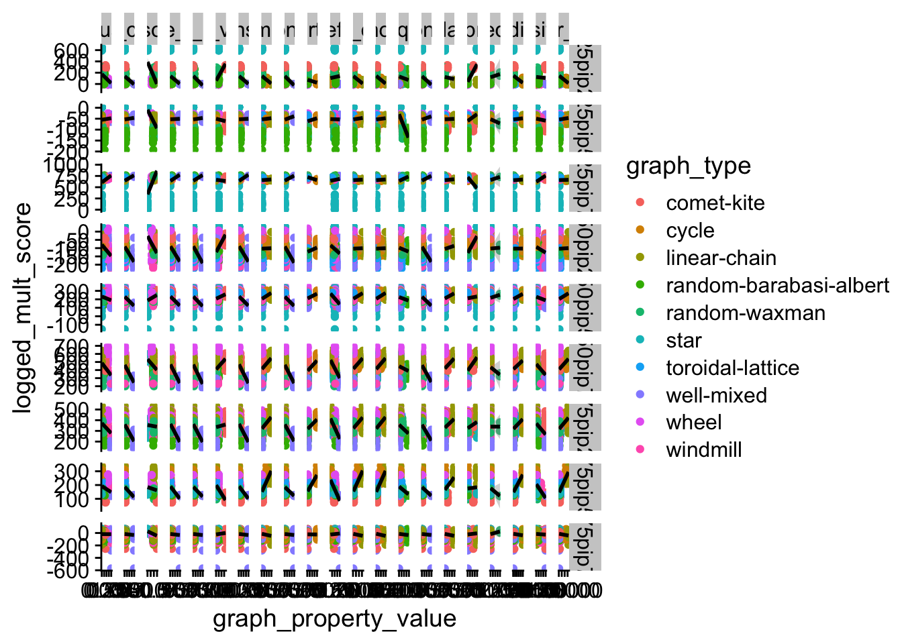
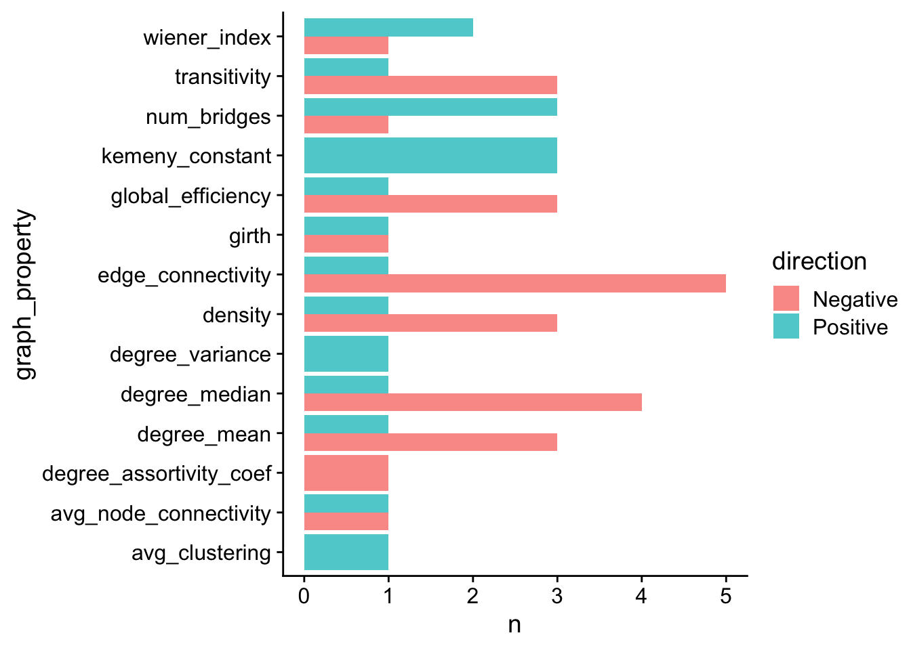

Chapter 8 Graph property correlations
We screened for graph properties correlated with community transitionability scores.
8.1 Dependencies and setup
library(tidyverse)
library(Hmisc)
library(broom)
library(knitr)
library(kableExtra)# Check if Rmd is being compiled using bookdown
bookdown <- exists("bookdown_build")experiment_slug <- "2024-03-08-varied-interaction-matrices"
working_directory <- paste(
"experiments",
experiment_slug,
"analysis",
sep = "/"
)
# Adjust working directory if being knitted for bookdown build.
if (bookdown) {
working_directory <- paste0(
bookdown_wd_prefix,
working_directory
)
}
plot_dir <- paste(
working_directory,
"plots",
sep = "/"
)
data_path <- paste(
working_directory,
"data",
"world_summary_final_update_with-graph-props.csv",
sep = "/"
)
data <- read_csv(data_path)Set cowplot theme as default plotting theme.
theme_set(theme_cowplot())8.2 Data preprocessing
max_update <- max(data$update)
# Ensure that we just have measurements from final update.
data <- data %>%
filter(update == max_update) %>%
mutate(
interaction_matrix = as.factor(interaction_matrix),
graph_type = as.factor(graph_type),
summary_mode = as.factor(summary_mode),
update = as.numeric(update),
SEED = as.factor(SEED),
graph_file = str_split_i(DIFFUSION_SPATIAL_STRUCTURE_FILE, "/", -1)
) %>%
mutate(
graph_file = as.factor(graph_file)
)
# write_csv(
# data,
# "world_summary_final_update.csv"
# )
# For each row, assign graph properties
properties <- c(
"graph_prop_density",
"graph_prop_degree_mean",
"graph_prop_degree_median",
"graph_prop_degree_variance",
"graph_prop_girth",
"graph_prop_degree_assortivity_coef",
"graph_prop_num_bridges",
"graph_prop_max_clique_size",
"graph_prop_transitivity",
"graph_prop_avg_clustering",
"graph_prop_num_connected_components",
"graph_prop_num_articulation_points",
"graph_prop_avg_node_connectivity",
"graph_prop_edge_connectivity",
"graph_prop_node_connectivity",
"graph_prop_diameter",
"graph_prop_radius",
"graph_prop_kemeny_constant",
"graph_prop_global_efficiency",
"graph_prop_wiener_index",
"graph_prop_longest_shortest_path"
)
# (3) Pivot longer
long_data <- data %>%
mutate(
graph_prop_diameter = case_when(
graph_prop_diameter == "error" ~ "-1",
.default = graph_prop_diameter
),
graph_prop_radius = case_when(
graph_prop_radius == "error" ~ "-1",
.default = graph_prop_radius
),
graph_prop_kemeny_constant = case_when(
graph_prop_kemeny_constant == "error" ~ "-1",
.default = graph_prop_kemeny_constant
)
) %>%
mutate(
graph_prop_diameter = as.numeric(graph_prop_diameter),
graph_prop_radius = as.numeric(graph_prop_radius),
graph_prop_kemeny_constant = as.numeric(graph_prop_kemeny_constant)
) %>%
select(
!c(
DIFFUSION_SPATIAL_STRUCTURE_FILE,
GROUP_REPRO_SPATIAL_STRUCTURE_FILE,
INTERACTION_SOURCE
)
) %>%
filter(
summary_mode == "ranked_threshold"
) %>%
pivot_longer(
cols = properties,
names_to = "graph_property",
values_to = "graph_property_value"
) %>%
filter(
(!is.na(graph_property_value)) & graph_property_value != "Inf" &
(!(graph_property == "graph_prop_diameter" & (graph_property_value == "-1"))) &
(!(graph_property == "graph_prop_radius" & (graph_property_value == "-1"))) &
(!(graph_property == "graph_prop_kemeny_constant" & (graph_property_value == "-1")))
) %>%
mutate(
graph_property_value = as.numeric(graph_property_value),
graph_property = str_remove(graph_property, "graph_prop_")
) %>%
mutate(
graph_property = as.factor(graph_property)
)
# write_csv(long_data, "test.csv")8.3 Plot relationships between transitionability and graph properties
rel_plot <- long_data %>%
ggplot(
aes(
x = graph_property_value,
y = logged_mult_score
)
) +
geom_point(aes(color = graph_type)) +
geom_smooth(
method = "lm",
color = "black"
) +
facet_grid(
interaction_matrix ~ graph_property,
scales = "free"
)
rel_plot
ggsave(
plot = rel_plot,
filename = paste(
plot_dir,
"property_relationships.pdf",
sep = "/"
),
width = 40,
height = 20
)8.4 Measure correlations
# Reference for running correlations over tidy data:
# https://dominicroye.github.io/en/2019/tidy-correlation-tests-in-r/
cor_fun <- function(data) {
cor.test(
data$graph_property_value,
data$logged_mult_score,
method = "spearman",
exact = FALSE
) %>% tidy()
}
nested <- long_data %>%
select(
c(
interaction_matrix,
graph_property,
graph_property_value,
logged_mult_score
)
) %>%
group_by(interaction_matrix, graph_property) %>%
nest() %>%
mutate(
model = map(data, cor_fun)
)
full_corr <- select(nested, -data) %>% unnest()
full_corr <- full_corr %>%
mutate(
abs_estimate = abs(estimate)
) %>%
arrange(
desc(abs_estimate)
) %>%
group_by(
interaction_matrix
) %>%
mutate(
p.value.adj = p.adjust(p.value, method = "holm")
) %>%
filter(
p.value.adj <= 0.05
)
full_corr_table <- kable(full_corr) %>%
kable_styling(latex_options = "striped")
save_kable(
full_corr_table,
paste(
plot_dir,
"correlation_table.pdf",
sep = "/"
)
)8.4.1 Top three significant correlations per interaction matrix
Break correlations down by interaction matrix
interaction_matrices <- levels(long_data$interaction_matrix)
for (mat_type in interaction_matrices) {
mat_data <- filter(long_data, interaction_matrix == mat_type)
nested <- mat_data %>%
select(
c(
interaction_matrix,
graph_property,
graph_property_value,
logged_mult_score
)
) %>%
group_by(interaction_matrix, graph_property) %>%
nest() %>%
mutate(
model = map(data, cor_fun)
)
im_corr <- select(nested, -data) %>% unnest()
im_corr <- im_corr %>%
mutate(
abs_estimate = abs(estimate)
) %>%
arrange(
desc(abs_estimate)
) %>%
ungroup() %>%
group_by(
interaction_matrix
) %>%
mutate(
p.value.adj = p.adjust(p.value, method = "holm")
) %>%
filter(
p.value.adj < 0.05
)
im_corr_table <- kable(im_corr) %>%
kable_styling(latex_options = "striped")
save_kable(
im_corr_table,
paste(
plot_dir,
paste0("correlation_table_", mat_type, ".pdf"),
sep = "/"
)
)
top_corr <- im_corr %>%
slice_max(
abs_estimate,
n = 3
)
top_corr_table <- kable(top_corr) %>%
kable_styling(latex_options = "striped")
save_kable(
top_corr_table,
paste(
plot_dir,
paste0("t3_correlation_table_", mat_type, ".pdf"),
sep = "/"
)
)
}8.4.2 Distrubition of correlations >= 0.5 strength
# Look at distribution of correlations >= 0.5 strength
corr_str_thresh <- 0.5
full_corr_thresh <- full_corr %>%
mutate(
direction = case_when(
estimate < 0 ~ "Negative",
estimate >= 0 ~ "Positive"
)
) %>%
mutate(
direction = as.factor(direction)
) %>%
filter(abs_estimate >= corr_str_thresh & p.value.adj <= 0.05)
corr_counts <- full_corr_thresh %>%
dplyr::group_by(graph_property, direction) %>%
dplyr::summarize(
n = n()
)
# If something has one direction, but not other, fill in 0 for other.
# For property in properties
correlation_dirs_plot <- corr_counts %>%
ggplot(
aes(
x = graph_property,
fill = direction,
y = n
)
) +
geom_bar(stat = "identity", position = position_dodge(), alpha = 0.75) +
coord_flip()
ggsave(
plot = correlation_dirs_plot,
filename = paste(
plot_dir,
"most_moderate_correlations.pdf",
sep = "/"
)
)
correlation_dirs_plot